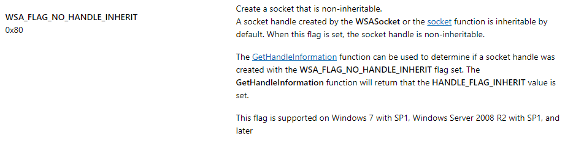

# Amor Ocasional
Caloni, 2019-01-02 <cinema> <series> [up] [copy]Essa série estilo comédia romântica da Netflix está ligeiramente acima da média, graças à performance adorável de Zita Hanrot como a vulnerável Elsa e também ao tratamento um pouco mais sério à história criada pela dupla Chris Lang e Noémie Saglio. Ela é francesa e é uma série, o que quer dizer que não termina. Mas seus personagens são suportáveis por talvez mais alguns episódios, embora no fundo tudo pudesse ser resolvido em um longa metragem.
Mas não é isso que o dinheiro deseja, e por isso temos um produto mais inchado e cheio de sub-dramas de seus outros personagens, todos envolvendo relacionamentos. O plot é mais que previsível e já foi feito algumas vezes: amigas contratam serviços profissionais de companhia (incluindo sexual) para ajudar uma amiga que foi traída pelo namorado e que sofre a pós-separação. Criando um roteiro que está de acordo com a personalidade da menina, o michê aos poucos obviamente se envolve demais com ela. Ambos são lindos, fazer o quê? Não é todo dia que te pagam para chavecar uma criatura tão adorável quanto Elsa.
Em cima disso há um casal onde uma gravidez e seus hormônios ameaçam um namoro, uma garota mais liberal que tem sorte no amor, mas não tanto no trabalho, e mais alguns personagens que colorem uma Paris vista mais de dentro de apartamentos, bares e ruas. Acompanhar essas pessoas falando francês em suas situações nada originais é o que há nessa série. Não é ruim, tampouco é ótimo. Fica como entretenimento temporário; uma novela francesa de curta duração.
# A Pé Ele Não Vai Longe
Caloni, 2019-01-03 <cinema> <movies> [up] [copy]Com a estreia desse filme talvez o politicamente correto anuncie os seus finalmente em 2019. Ou talvez não. A polêmica por trás do cartunista John Callahan existiu simplesmente porque ele escrevia em uma cidadezinha que levava a sério demais tudo que dizia respeito aos incapacitados, religiosos, etc. Bom, não se pode culpá-los, pois essa tendência em exagerar os dramas da vida moderna se espalhou para praticamente todo o Ocidente.
O filme de Gus Van Sant vem transformar em Cinema a biografia de Callahan, de mesmo nome (assim como a piada de um de seus desenhos), em uma narrativa que tenta unir o reconhecimento, a superação e a reflexão de nosso herói através dos anos em que ele esteve em uma cadeira de rodas, se recuperando do seu baque ao se tornar tetraplégico quando jovem em um acidente, e entendendo o processo que o levou ao fundo do poço.
É uma abordagem interessante, pois não se torna enfadonho acompanhar sua história quando ela é contada através de múltiplos "Callahan's" tentando entender o que houve. O vemos fazendo discurso ao receber um prêmio, sendo ajudado por garotos de skate ao cair na rua, em suas sessões de terapia em uma reunião privada dos Alcoólicos Anônimos com problemas ainda maiores. O filme inteiro parece um momento de reflexão que atravessa o tempo.
(Um parênteses: há uma curiosidade interessante sobre o grupo de pessoas do AA à beira do fim; as duas mulheres que fazem parte são Beth Ditto e Kim Gordon, ambas cantoras, mas que vez ou outra fazem pontas no cinema; Gordon mais que Ditto; mas é Ditto que realiza uma curta mas impactante cena.)
Bom, todo elenco praticamente realiza pontas no filme, pois este é o filme em que Joaquin Phoenix vai monopolizar atenções (não contente em no ano anterior ter protagonizado o espetacular novo filme de Lynne Ramsay, Você Nunca Esteve Realmente Aqui). Mesmo Jonah Hill, que consegue soar autêntico mesmo fazendo um herdeiro rico gay que tenta se redimir por ter estragado a vida de seu grande amor, só o faz porque é um ator econômico, que precisa de pouquíssimas cenas para causar um impacto (e sem roubar a atenção do protagonista). Já Rooney Mara é uma coadjuvante de luxo, que serve mais como um contraponto romântico para uma vida ausente de significado.
Phoenix é um John Callahan em uma versão mista de idades. A versão real entrou na vida do álcool aos 12 e se acidentou aos 21, se tornando um cartunista de sucesso ao começar a esboçar desenhos e espalhar a palavra. Ele constantemente procurava a opinião das pessoas comuns sobre seus desenhos vistos como polêmicos, e eram essas pessoas as verdadeiras avaliadoras do tom de suas piadas, que envolviam principalmente incapacitados e religião (Callahan foi abusado quando criança por uma professora de uma escola cristã). É perigoso exprimir opiniões que possam soar ofensivas a um grupo de "desprivilegiados"? Bom, tenho uma "novidade" para você: o mundo inteiro faz isso e a mídia finge que não existe.
A direção de Gus Van Sant (Milk, Inquietos, Psicose de 98) parece procurar um estilo onde não há. A edição, também de Van Sant, é muito mais prolífica, conseguindo ritmar as idas e vindas no tempo e torná-las uma só. O filme não quer mostrar a diferença das épocas, mas entender o processo da cura do alcoolismo e sua nova profissão como um ser humano completo, onde não há causalidade simples que explique. O resultado é uma narrativa natural, onde as coisas acontecem porque... acontecem. Por mais trágica que seja a situação de alguém que perdeu os movimentos e tendo como cuidador um rapaz relapso, brilhantemente retratado por Van Sant como um Tony Greenhand indo e vindo rapidamente, quase invisível e ausente na casa (escura), este não é um drama pesado, mas um relato vívido de uma vida que foi simplesmente vivida, apesar dos percalços.
A Pé Ele Não Vai Longe é a síntese de tudo o que a vida verdadeiramente é sem os filtros dramáticos do povo do politicamente correto que enxerga desgraça em qualquer traço da vida. Se você olhar para John Callahan fazendo piadas sobre sua própria situação e a de outros, e entender que o humor do absurdo é uma forma de nos expressarmos a respeito dessa locomotiva de emoções chamada vida, e que não faz sentido serem lapidadas em leis de causalidade, parabéns! Terá aproveitado essa breve e adorável viagem em cadeira de rodas, em uma velocidade acima do permitido.
# Bug no Boost Asio usando função AcceptEx do Winsock
Caloni, 2019-01-06 <computer> [up] [copy]Depois de um mês de correção e mais um ou dois meses preparando um compilado do que ocorreu no software que estamos mantendo, foi descoberta uma situação muito peculiar que ocorre tanto em Windows XP quanto no Windows 10, mas que no 10 tem uma correção bem-educada e no XP... bom, nem tanto.
O problema ocorreu em um uso padrão do Boost.Asio de modo assíncrono. Sem querer entrar muito em código nesse momento -- que teve como base nosso projeto de servidor de requisições mais rápido do universo, o **motherforker** -- se trata apenas de um listening que usa spawn de um lambda para tratar os accepts e dentro dele cria processos, redirecionando sua entrada e saída.
// pseudocode
void Acceptor::doAccept()
{
while(!isStopping())
{
async_accept();
spawn(Acceptor::createProcessGetOutputAndSendBack);
}
}
Nas entranhas do Boost.Asio na implementação para Windows o accept utiliza a API AcceptEx, que já cria o socket cliente antes mesmo da conexão ser fechada. Se trata de uma operação de IO assíncrono como os que tem no Windows: faz tudo que é necessário fazer e é responsabilidade do programa verificar se houve IO (de maneira síncrona ou assíncrona). No caso do Asio a maneira de verificar é via checagem do handle de completion durante os momentos de idle do **io_service**.
BOOL AcceptEx( SOCKET sListenSocket, SOCKET sAcceptSocket, // <--- socket cliente já criado PVOID lpOutputBuffer, DWORD dwReceiveDataLength, DWORD dwLocalAddressLength, DWORD dwRemoteAddressLength, LPDWORD lpdwBytesReceived, LPOVERLAPPED lpOverlapped );
Quando há uma nova conexão o método createProcessGetOutputAndSendBack lê dados do socket cliente como um comando a ser executado e utiliza a API CreateProcess passando esse comando. A saída desse processo criado é capturada via saída-padrão. Para isso é usada a flag de herança de handles e handles de arquivos (poderiam ser pipes) são usados para enviar entrada, capturar saída, etc.
BOOL CreateProcessA(
LPCSTR lpApplicationName,
LPSTR lpCommandLine,
LPSECURITY_ATTRIBUTES lpProcessAttributes,
LPSECURITY_ATTRIBUTES lpThreadAttributes,
BOOL bInheritHandles, // <--- flag de herança de handles
DWORD dwCreationFlags,
LPVOID lpEnvironment,
LPCSTR lpCurrentDirectory,
LPSTARTUPINFOA lpStartupInfo,
LPPROCESS_INFORMATION lpProcessInformation
);
// usando flags de uso de entrada/saída padrão
STARTUPINFO si = { sizeof(si) };
si.dwFlags = STARTF_USESTDHANDLES;
si.hStdInput = CreateFileA(inputTempFilePath, GENERIC_READ, 0, &sa, OPEN_EXISTING, 0, NULL);
si.hStdOutput = CreateFileA(outputTempFilePath, GENERIC_WRITE, FILE_SHARE_READ, &sa, CREATE_ALWAYS, 0, NULL);
si.hStdError = si.hStdOutput;
Após o término do processo a saída estará no arquivo aberto em si.hStdOutput. Basta abri-lo para leitura e enviar seu conteúdo via socket para o cliente. O trabalho dessa conexão termina por aí.
O que não estava previsto é que junto da herança dos handles vai também handles indesejados. Como o de "\Device\Afd", que é um recurso usado na comunicação do winsock. Ao usar as funções síncronas e tradicionais do winsock, que constitui em criar o socket server, dar listen e no accept o socket cliente ter sido criado, o AcceptEx exige já um socket cliente criado, o que é feito no sample da Microsoft com a função socket e no Boost.Asio com a duplicação do socket existente (que também foi criado via socket function).
ClientSocket = socket(result->ai_family, result->ai_socktype, result->ai_protocol);
Esses dois sockets são herdáveis por default (implementação da função socket) e são representados pelos handles listados no Process Explorer como já visto, pelo nome "\Device\Afd". O contador de handles é aumentado a partir da criação do processo-filho e esses dois handles aparecem em ambos os processos.
Até aí tudo bem. O problema na verdade ocorre no segundo request enviado quando o primeiro request não terminou (e.g. o primeiro request é um notepad.exe que irá demorar e o segundo request um "cmd /c dir", que executa e já volta com a saída). Nessa situação todos os sockets criados até aqui -- incluindo o cliente do primeiro request -- são herdados para o segundo processo-filho, e por questões que estão além do escopo desse estudo, mas que poderão ser verificados ao se analistar os drivers das camadas de TDI do Windows (kernel mode), o send da saída do segundo request para o socket cliente fica travado até a saída do primeiro processo-filho, onde ocorre dos handles serem fechados.
É uma situação complexa, que depende de várias variáveis, mas ela ocorre, se todas as variáveis ocorrerem ao mesmo tempo. Um resumo:
A solução para evitar handles herdáveis que não são desejáveis é proposta pelo Raymond Chen em seu blog: usar as API InitializeProcThreadAttributeList e UpdateProcThreadAttribute. Com isso é possível especificar quais handles podem ser herdados pelo processo_filho, e obviamente iremos colocar na lista apenas os arquivos de entrada e saída padrão (obs: não duplicar saída_padrão com erro_padrão quando ambos são o mesmo arquivo/handle).
As API InitializeProcThreadAttributeList e UpdateProcThreadAttribute não existem no Windows XP, o que quer dizer que isso exige uma segunda solução, que eu considerei antes de achar a terceira solução que teria que ser ad hoc: criar um processo-neto, sendo que o filho não receberá os handles herdados, mas irá criar o neto herdando os arquivos de entrada e saída padrão, enviando a saída de volta por um método à parte (ex: usando o nome de um arquivo em comum).
A terceira solução encontrada durante a compilação deste artigo é usar em vez da função socket, que não dá o controle sobre herança de handle, a função WSASocketW, onde existe um argumento dwFlags em que é possível passar o valor WSA_FLAG_NO_HANDLE_INHERIT (0x80), onde o handle do socket não será criado com a flag de herdável. Dessa forma apenas o socket cliente não se torna herdável e com isso o primeiro request não trava o segundo. A vantagem dessa correção é que ela é pontual no código e é de uma API já antiga, portanto compatível com todos os Windows.
**Update (2019-01-07)**: Na verdade a flag de não-herança do socket só passou a existir no Windows 7 com SP1, o que inviabiliza essa solução para Windows Vista e XP, como previamente foi dito.
Essas correções dizem respeito ao sample de uso do winsock como modelo server/client da própria Microsoft. Ele foi modificado para meus testes internos apenas.
Já para o Boost.Asio será necessário um estudo de impacto e o envio de uma proposta de correção (ou uso de um patch em que a criação do socket cliente deve ser feita sem herança). Isso pode potencialmente quebrar o funcionamento de outros tipos de programas que dependem direta ou indiretamente da herança de todos os sockets, ou talvez o Boost.Asio tenha uma maneira educada de entregar o controle da criação de sockets dependente de implementação. Eu não sei. Este é um próximo passo da pesquisa.
**Update (2019-01-07)**: Embora use a função WSASocketW o Boost.Asio não suporta a parametrização das flags, e sua implementação não é sobrecarregável, fazendo parte do namespace socket_opt. Foi criado um issue no GitHub do projeto Boost.Asio para ver os comentários e colocações da equipe. No aguardo.
# Minecraft: O Jogo
Caloni, 2019-01-06 <games> [up] [copy]Fundamentado em bases materialistas, a partir das quais Karl Marx se orgulharia, Minecraft é uma luta por recursos e sobrevivência. E por ser simples e fácil de jogar, as crianças adoram. Isso e porque também tem skins na aparência dos players.
Mas qual o objetivo em Minecraft? Ele é um jogo pensado como um mundo de blocos onde o que muda são as propriedades físicas desses blocos e o que é possível fazer com eles. Criado por Markus Persson e posteriormente desenvolvido por sua empresa, a Mojang (e depois comprado pela Microsoft), o jogo que atrai crianças, jovens e autistas de todo mundo possui alguns atrativos. O sistema de troféus, como em todo jogo moderno, já foi colocado. Porém, resta a pergunta fatal, filosófica, que quase pode ser ouvida quando se entra no jogo e se começa a minerar: qual o objetivo?
E a resposta ironicamente acaba sendo a mesma sobre o mundo físico em que vivemos: sobreviver. E para isso é necessário obter recursos. Madeira, minério, alimento. Coletado ou caçado. Animais precisam ser mortos ou domesticados para fornecer os recursos que precisamos. Sangue deve jorrar nessa experiência lúdica para que aprendamos que o mundo é um lugar muitas vezes escuro, solitário e vazio de significado.
Claro que com o tempo surgiram os servidores com sub-jogos com objetivos claros e foi tudo por água abaixo. Crianças mimadas.
Mas se concentre no modo clássico do jogo. Survival. Os recursos não brotam como mágica e seu uso não é tão claro. É preciso aprender, e vivenciar no processo. Essa busca por significado, por objetivo, é o maior valor que o jogo tem. Tirando seus gráficos, embora simplistas, esteticamente agradáveis, ou sua movimentação intuitiva, seu sistema de experiência, de programação, de probabilidades, etc.
Jogar Minecraft como um adulto é voltar a ser criança em uma nova versão. E nessa versão aprendemos, como crianças, a pensar como adultos. E nos esquecemos de toda essa baboseira de direitos, de casa aconchegante e comida quentinha. É a vida cruel ensinada através de pixels. Resta ao jogador eventual conseguir encontrar essa magia dentro desse mundo, para ao sair se sentir grato pela vida privilegiada que tem, onde não é necessário se esconder à noite porque os monstros estarão à espreita.
# Vidro
Caloni, 2019-01-08 <cinemaqui> <cinema> <movies> [up] [copy]Dezenove anos atrás. Esse é o tempo que separa Corpo Fechado, início dessa até então trilogia, até sua conclusão, ou expansão desnecessária, inflada e exagerada. Mas nem por isso deixa de ser um trabalho minucioso, curioso e competente de uma saga que se mantém dentro de seus próprios padrões do começo ao fim.
Não acredito que haja alguém que de fato antecipou esse momento após ter visto Corpo Fechado, um filme que inicia como um drama e, seguindo a cartilha sempre presente de seu idealizador, M. Night Shyamalan, se desdobra em uma reviravolta que busca a fantasia do cotidiano, das fábulas, das crenças e da imaginação. E se essa pessoa criativa antecipou tal momento, com certeza ela não imaginaria que o resultado conseguiria ser concretizado com tanto esmero e tanta paixão pela suas ideias originais.
E quais eram essas ideias? Bom, basicamente o minimalismo sendo trazido de volta ao mundo dos super-heróis. Do topo do Monte Olimpo (Hollywood) admiramos os poderes sobrenaturais de uma coletânea de deuses modernos nos intermináveis filmes produzidos pela Marvel e DC. Enquanto isso, "Vidro" nos convida a descer e observar esse fenômeno mais de perto, no cotidiano das pessoas comuns. De dentro de cada um de nós.
Essa jornada começa na rotina escusa de David Dunn (Bruce Willis), que se torna com a ajuda do seu filho, Joseph (interpretado pelo mesmo ator, Spencer Treat Clark, no Corpo Fechado e 19 anos depois em Vidro), um Justiceiro com uma capa de chuva. Quando ele decide caminhar (em uma ponta divertida com o próprio diretor) ele está em busca de fazer justiça com as próprias mãos, mãos essas aparentemente invencíveis, pois sua força descomunal que não é visível na postura de Willis, que parece apenas um velho razoavelmente em forma (mas a postura de Willis conta bastante).
As suas caminhadas recentes buscam obter mais informações sobre um serial killer cujo fetiche são garotas. Conhecido como A Horda, Kevin através de um trauma de infância se desdobrou em quase trinta personalidades diferentes dentro de si, incluindo Fera, uma personalidade animalesca, que também possui força descomunal. Incertos a respeito de sua moral, Kevin é daqueles personagens que é vilão e vítima ao mesmo tempo, e mesmo não tendo um gancho de superação para exibir ele possui uma profundidade suficiente para nos interessarmos por sua história.
Parte disso, é claro, vem da interpretação admirável de James McAvoy, que representa não apenas estereótipos, mas estereótipos com charme em suas (visíveis) diferentes personalidades. Kevin se tornaria um grande problema para roteiristas menos habilidosos que Shyamalan, mas aqui ele encontra um confinamento e condições que propiciam o seu uso funcional dentro da história de maneira orgânica. Nunca sentimos que as idas e vindas de sua personalidade é algo apenas conveniente para a história. Mas para entender a fundo isso, claro, será necessário assistir seu prequel, Fragmentado.
(Aliás, muito se aproveitará o espectador que assistir os dois filmes que antecedem esse terceiro, e em alguns momentos será primordial para que ele não fique perdido nas pistas que são apresentadas durante a projeção para que tudo se encaixe. No entanto, mesmo que você seja um marinheiro de primeiro filme ele ainda funciona, com apenas algumas ressalvas que dizem respeito ao passado de seus personagens.)
Shyamalan parece estar no controle absoluto de suas criaturas, mas nada se compara com sua direção. Completamente à vontade em momentos de humor, de tensão e de medo, o diretor nos faz lembrar porque ele foi considerado uma revelação depois de sua estreia no cinema com Sexto Sentido, e tantos outros momentos que os fãs do diretor (e do Cinema) poderão encontrar neste filme.
Criativo no uso da câmera e do enquadramento para nos propiciar momentos de medo e tensão, há por exemplo alguns momentos onde Kevin troca de personalidade onde é relevante que vejamos o rosto de seu intelocutor, e há outros momentos em que é melhor que vejamos a própria troca ocorrendo no rosto de McAvoy. O uso de enquadramentos que limitam nosso campo de visão também funciona muito bem, pois se passando quase totalmente em um centro de tratamento psiquiátrico que mais parece uma prisão, é vital que ao vermos nossos heróis eles estejam com as paredes muito próximas. E esse artifício é vital na questão do suspense, pois ao usar uma profundidade de campo muito rasa não conseguimos medir com certeza a distância que essas pessoas estão das armadilhas que existem que evitam que elas saiam de suas celas, e repare como é frequente que eles se aproximem e se distanciem da câmera, tornando a cena frequentemente tensa apenas com essa escolha de filmagem.
No entanto, isso não quer dizer que o diretor mantém intactos os seus conhecidos vícios. Melhorando em muito sua arrogância e petulância, Shyamalan parece fazer aqui seu trabalho mais contido depois de uma sucessão de pretensiosidade nos últimos filmes. Ainda assim, é possível detectar alguns momentos aqui e ali em que lembraremos de sua antiga persona, da que joga tudo para o alto e não se importa muito em amarrar suas pontas temáticas (seja no roteiro ou direção).
O mesmo não se pode dizer de Samuel L. Jackson, que aqui escolhe representar um vilão extremamente frágil e acertadamente contido, com uma economia de movimentos que beira o autismo. No entanto, sua introspecção na primeira metade é tão natural que somos levados a ficar com sérias dúvidas sobre o que ocorre na mente de Elijah Price. E parte disso também é virtude do próprio filme, que evita fazer exposições bobas que frequentemente vemos em trabalhos menos sutis, com cortes frenéticos demonstrando a rapidez com que certo personagem-gênio pensa. Não saber por que Elijah está junto desses dois titãs e é tratado da mesma maneira é o que nos faz ter respeito por essa pessoa fragilizada na cadeira de rodas.
Mas a função de L. Jackson/Elijah não termina por aí. Sendo o aficionado por histórias em quadrinhos, é ele que faz os comentários mais perspicazes de quebra de quarta parede, e o faz não se tornando um incômodo para a narrativa e ainda a pincelando com uma nota poética que se torna surpreendentemente tocante. Sim, é possível chorar com Shyamalan, mas não pelo drama fácil, mas pela empatia do espectador com a paixão que ele exibe em entender completamente que fatos científicos valem muito menos para os seres humanos que uma narrativa gloriosa, e que é isso, no final das contas, que se está tentando resgatar na história.
Conseguindo unir o realismo da "vida real" com o idealismo que adoramos acompanhar nos quadrinhos, "Vidro" é uma combinação perfeita desses dois elementos e uma conclusão à altura dos dois outros filmes que são pontos altos na carreira de seu diretor. Ele poderia ser mais bem polido, mas do jeito que está deve empolgar os fãs da mitologia humana e irritar com moderação os caros, barulhentos, caprichosos e muitas vezes irritantes deuses do Monte Olimpo.
# Temporada
Caloni, 2019-01-11 <cinemaqui> <cinema> <movies> [up] [copy]O filme "Temporada" é um retrato natural do cotidiano de uma cidade e sua cultura sob o ponto de vista de um ser humano em mudança. Mudança de cidade, de postura, de atitude. Pode chamar de redescoberta ou "cair na real". Pode chamar de fantasia ou crítica social.
Juliana, morando sozinha e inspirando "dozinha", brinca com uma bola sendo atirada na parede. Ela coloca uma música no celular e para amplificar o som o coloca dentro de um balde. As ruas de uma metrópole do estado de Minas Gerais estão sempre tranquilas (e quem já foi pra Minas sabe que é assim), e ainda que alguns alardeiem o problema da falta de segurança a maioria sabe que até a periferia da cidade é "tranquilim".
A grande virtude do filme dirigido e escrito por André Novais Oliveira é não forçar demais um lado da questão. O filme flui em ritmo e em ideias, e se você não for prestando atenção no silência e na solidão de Juliana dificilmente vai aproveitar a sessão.
A moça está em uma cidade maior da que onde nasceu e cresceu, tranferida para um emprego que conseguiu via concurso público: fazer parte da equipe contra o mosquito da dengue. Ela aguarda o marido ansiosamente, pois espera que essa mudança faça o passado traumático ficar para trás. Os detalhes desse passado você confere em uma das melhores cenas da atriz Grace Passô. Note como seus gestos sutis revelam sua relutância em confessar intimidades com a prima. Ela serve um salgadinho para ela, beberica um pouco de cachaça, olha para a mesa, apoia a cabeça em seu braço. Enquanto isso a cena sai de uma geral com as duas pessoas e se fecha em um quadro contendo todos esses elmentos. É a cena-chave para entendermos a dor interna que Juliana carrega.
Essa dor é difícil de traduzir em palavras, pois foi composta por tantos elementos de sua vida que foram deixados para trás -- e que não vemos, como a distante relação com o pai viúvo -- que sua reconstrução é boa parte do trabalho do filme, enquanto Juliana vai focando mais no trabalho e nos seus novos colegas, que viram aos poucos amigos. E essa dor vai se transformando. Ela chega como a dor da solidão e vai aos poucos trabalhando tudo que ela foi e tudo que ela pode ser como indivíduo.
Note, por exemplo, a cena em que ela, tendo labirintite, é obrigada a subir na laje de uma das casas que está visitando em seu trabalho. Já no topo da casa, ela observa a paisagem, e acha tudo aquilo bonito. Na hora de descer diz que é a parte mais fácil. E é, mesmo. Ela estava em declínio no começo do filme e agora que foi se reerguendo frente a seu novo status independente, descer é a coisa mais fácil que pode fazer.
O filme é recheado de ótimos momentos em que a reflexão é sugerida pelo ritmo mais lento, e a música torta de Pedro Santiago, que faz um belo trabalho elaborando notas assimétricas que revelam um desbalanço do universo e que vai aos poucos harmonizando em alguns exemplos de música clássica. E a história não marca o tempo, exceto pela transição de calor, chuva e frio. Há muitos detalhes escondidos em diálogos que soam despretensiosos, como as condições do emprego daquela equipe, e outros não tão sutis, como a revelação que um dos amigos de Juliana talvez seja pai. O filme começa sutil e vai aos poucos exagerando.
Parte disso é a sua suposta crítica social, travestida pela cartilha feminista padrão, onde a mulher se torna independente por não precisar de homem e por fazer um corte de cabelo diferentão. Hoje isso já soa clichê e brega. E esse é o exagero do terceiro ato que destoa de todo o resto, o subverte, dando outro significado, mais propagandista, de um drama íntimo e tocante sobre a solidão que aos poucos vira uma bandeira de militância.
Isso gera um debate curioso. Algo que parece implícito em todas as narrativas de todos os filmes que seguem esse modelo: a mudança de um estereótipo para outro. Enquanto em um relacionamento com uma pessoa que foi se afastando com o tempo gera o estereótipo da mulher casada presa eternamente ao marido, cortar o cabelo diferente e ter seus crushes por diversão gera o estereótipo da mulher independente que faz o que quiser, desde que "o que quiser" seja cortar o cabelo diferente, etc. Independente do destino de Juliana, ela se encontra em um filme inesperadamente maniqueísta que precisa colocá-la em um estereótipo; de preferência o que agrade os valores dos produtores e do diretor.
E isso sem dúvida enfraquece uma narrativa, que estava indo tão bonita pelo caminho mais sutil, mais individualista, e que vai de repente em encontro com interesses alheios ao filme. É quando a revolução se torna lugar-comum que o romantismo se perde para sempre. E é quando se perde a oportunidade de se realizar um filme inesquecível sobre como o ser humano se adapta e se conquista sempre que confrontado com a realidade.
# Homem-Aranha no Aranhaverso
Caloni, 2019-01-12 <cinema> <movies> [up] [copy]Lá vamos nós de novo. Era uma vez um garoto... ou garota... que foi picadx por uma aranha... ou porco... e se transformou em uma japonesa de anime... ou um rapaz do Brooklin. Não, pera. Ah, você entendeu.
"Spider-Man: Into the Spider-Verse" possui uma trama, mas ela se desdobra em diferentes pontos de vista, diferentes origens com diferentes consequências. Como uma teia de aranha ou como o reflexo da ponte entre dois prédios onde vemos escrito "Vision" (visão) ou como as diferentes texturas, paletas de cores (e p&b), vozes e dimensões de seus personagens. Se trata de uma animação que explora os limites da existência através de um dos heróis mais carismáticos dos quadrinhos, dos desenhos e dos filmes. Peter Parker já teve três versões recentes (últimos 20 anos) apenas no Cinema. Nos quadrinhos, infinitas. Como contextualizar toda essa bagunça de múltiplas edições?
Com o multiverso. E a história é simples: vilão, acelerador de partículas, multiverso. As pistas você vai encontrando na história de origem de Miles Morales, que é a versão do Brooklin (mas ainda Nova York) do Aranha, caracterizado de acordo com sua origem, cultura e relações iniciais. Seu pai é um policial, seu tio um fora-da-lei. Ele estuda em uma escola de elite, mas possui uma veia artística para o grafite. O próprio Morales oscila entre dois mundos, no mesmo universo. E nesse universo Homem-Aranha morreu diante de seus olhos tentando salvá-lo.
A criatividade aparentemente ilimitada dos roteiristas em conduzir uma história que explora as diferentes possibilidades em que heróis traumatizados chegam à tona só rivaliza com a deliciosa direção de arte, que utiliza como camada principal uma textura na animação que não apenas lembra os quadrinhos mais recentes, com as ranhuras transversais, e que combina isso com a mudança de foco sutilmente ao embaçar o fundo, mas que vem carregada com uma bagagem emocional no estilo das HQs. Além disso, balões e quadros começam a aparecer conforme o portal para múltiplos universos se abre e Morales é picado por uma aranha mutante. As cenas de ação são combinadas com barulhos cartunescos ao fundo e a saturação de cores típica das explosões. O 3D cinematográfico é completamente desnecessário quando o filme possui a mais absoluta perfeição em retratar os quadrinhos de quadro a quadro (só que em movimento).
Além disso, a inventividade não para por aí, já que a câmera não tem limites (até por ser uma animação), criando planos horizontais, verticais, diagonais com a mais pura liberdade que apenas o ponto de vista dos universos do Homem-Aranha seriam capazes de utilizar. De repente o Aranha começa a andar pelos tetos e paredes e a câmera acompanha seu ponto de vista. E quando duas versões de Homem-Aranha discutem em diferentes planos os vemos cada um à sua maneira. Momentos de pura adrenalina se traduzem em quadros combinados dessa ação, que é o que veríamos se estivéssemos folheando uma das inúmeras aventuras do Aranha nos quadrinhos.
Além disso, uma trilha sonora moderna, ágil, às vezes pesada, nos conduz ao espírito daquela Nova York caótica com precisão e bom gosto, criando uma atmosfera mais brookliniana, embora não de maneira separatista. Se trata apenas de mais um ponto de vista em um mosaico de emoções que foi criado em décadas de diferentes aventuras de um herói traumatizado. Essa é uma versão. Não a melhor, mas atualmente a mais empolgante. Essa é a forma com que se realiza inclusão quando ela é bem feita, e não como um preenchimento de cotas automático.
Miles Morales é um personagem multidimensional vivendo o drama de ter que assumir a bronca em sua própria versão do multiverso. Isso pesa muito em determinados momentos do longa, que não se priva de utilizar sua censura de 10 anos até o limite do aceitável para pré-adolescentes, criando no processo um drama sério e ao mesmo tempo irreverente, na exata proporção que os fãs dos quadrinhos estão acostumados a acompanhar.
Spider-Verse possui a melhor participação de Stan Lee (póstuma) nos filmes da Marvel, e ganha a melhor homenagem que se poderia ter feito a esse criador de mitos: um filme que não se limita a uma história de origem, mas se expande em direção ao espectador e seu sentido próprio de aranha. Parafraseando Lee: não, não é sobre grandes poderes e grandes responsabilidades. É assim: "Aquela pessoa que ajuda os outros simplesmente porque deveria ou precisa ser feito, e porque é a coisa certa a fazer, é sem dúvida, um super-herói de verdade."
Esse filme com certeza é um grande abraço de despedida em um dos gênios dos quadrinhos.
# Wifi Ralph: Quebrando a Internet
Caloni, 2019-01-12 <cinemaqui> <cinema> <movies> [up] [copy]Quem assistir "Wifi Ralph: Quebrando a Internet" pelo título já deve saber que não deverá ver com o mesmo clima do primeiro filme ("Detona Ralph"), que apostava no saudosismo dos fãs de fliperamas e vídeo-games antigos em geral para explorar a magia dos 0s e 1s através dos carismáticos personagens Ralph e Vanellope, entre outros.
Mas não se enganem: é o mesmo filme remodelado para sua segunda protagonista. Se em Detona Ralph o brutamontes que não se sentia bem por nunca ter recebido créditos por fazer parte de um jogo em que ele era um eterno vilão, aqui é Vanellope, com todo seu espírito aventureiro, que se sente em um marasmo eterno correndo três pistas de seu jogo que já sabe de cor.
Tudo muda quando surge A Internet, simbolizada por um roteador Wi-Fi que é plugado na mesma régua de tomadas dos fliperamas. Ah, isso e o fato do volante do jogo de Vanellope ter quebrado e eles precisarem comprar outro no EBay para conseguir com que o jogo não seja desativado. Fica claro que a trupe de roteiristas quer enfiar várias ideias diferentes goela abaixo do espectador sem primeiro mastigá-las direito. E conforme Ralph e Vanellope se aventuram por esse mundo mágico que nunca dorme também veremos que, assim como nossos herois, a história parece seguir um caminho em busca de patrocinadores online (talvez uma jogada metalinguística, mas com certeza uma sacada mercadológica).
O núcleo mais importante da história está na constante insatisfação de seus heróis digitais, personagens criados com apenas o propósito de participar de seus jogos. Quando Vanellope confessa que acredita haver mais no mundo do que apenas uma existência limitada nas regras que estão acostumados a seguir, ela também está olhando para nós, humanos, e nossa eterna insatisfação com nossas vidas. É um momento profundo que flerta sutilmente com a filosofia de nossa própria existência.
Mas logo o apelo ajeitado pela equipe de roteirista gira em torno de algo mais comum em animações: a amizade que se formou entre Ralph e essa pequena, mas indomável garota. Ralph se apegou demais à ideia de ser o herói grandalhão da garotinha em perigo, e isso tem que ser quebrado para que Vanellope consiga ser uma pessoa completa e realizada. Se você ainda não percebeu a tentativa de criticar as décadas de histórias de princesas que a própria Disney desenvolveu, que giravam em torno de um príncipe salvador, espere até chegar em um castelo onde elas ficam gastando seu tempo fofocando e respondendo perguntas de perfil das usuárias de internet.
Há algumas boas ideias ao tentar criar metáforas como os pacotes de internet trafegando pela rede, ou o divertidíssimo sistema de busca que tenta adivinhar, o sistema de spams, etc. Tudo isso parece soar datado assim que aparece no filme, mas ao mesmo tempo é muito bem feito. Note como não existe horizonte na internet; tudo que vemos é um fundo branco (o padrão nas cores dos sites) que parece inalcançável. Os usuários aparecem como versões quadradas que "navegam" por esse hiper-espaço clicando em links.
Porém, no fundo, "Wifi Ralph" é um filme leve, sem maiores atribulações. Ele tem um conflito bem definido, que parece intransponível porque mexe com os sentimentos dos personagens que aprendemos a adorar, e só pelo fato da Disney estar mais interessada em um filme de ideias para crianças do que ação e vilões que surgem convenientemente no segundo ato já é um ponto positivo.
# Eu Sou Mais Eu
Caloni, 2019-01-14 <cinemaqui> <cinema> <movies> [up] [copy]"Eu Sou Mais Eu" é aquele velho filme da pessoa revivendo sua adolescência enquanto analisa o seu eu atual, e o que deixou para trás entre esses dois momentos. Geralmente são aqueles valores que se perdem, as amizades significativas, etc. No entanto, a tentativa aqui é reaver mesmo o nosso eu, aquele eu estranho que foi desmoralizado na escola e que acabou se escondendo por trás de uma máscara de auto-suficiência que, como todo adulto sabe, é só um instrumento para se auto-torturar.
A heroína é Camilla, interpretada pela vlogger, atriz, cantora e etc Kéfera Buchmann, o que significa muito para a história. Kéfera começou nos YouTube da vida quando começou a surgir... o YouTube. E a banda larga. E tudo isso que hoje é lugar-comum, mas que na época deu uma acelerada no surgimento de sub-celebridades, mas que, principalmente, na descoberta de novos talentos ofuscados pela estrutura midiática do sucesso. Os canais de mídias sociais na internet abriram um leque de possibilidades para todos os estranhos mostrarem sua personalidade, o que aumentou a diversidade do que conhecíamos como talento.
Camilla surge no filme como uma cantora pop, finalizando seu último clipe de sucesso baseado em sua persona empoderada. Os roteiristas L.G. Bayão e Angélica Lopes conseguem unir a visão de sucesso de pessoas como Anitta (mais um sintoma do que comentei no parágrafo anterior) com a postura muitas vezes desagradável de pessoas que atingiram a fama muito cedo. Não se trata de uma crítica direta a um artista em específico, mas uma demonstração muito eficaz desse problema de todos nós de nos perdermos no processo de construção de nossas carreiras. E se isso já é problemático para nós, meros mortais, a questão da fama apenas amplifica isso.
Daí surge aquele plaft pluft iniciado pela aparição de uma fã obsessiva que faz Camilla voltar para 2004, época do Orkut, do disk-player e de hits da época (novos ou velhos), como o da banda Raimundos (A Mais Pedida). Um parênteses: essa fã maluca é interpretada pela preparadora de elenco do filme, Estrela Straus, cujo triunfo no filme não deve ser esquecido. Ela utiliza o método Lee Strasberg, mas nas palavras de Kéfera na coletiva de imprensa, o mais marcante para ela foi o treinamento deles em escolherem animais para emocionamente se conectarem e aos poucos acontecer a humanização de seus personagens. Kéfera escolheu esquilo e leão em suas personas de Camilla antes e depois da fama. Bom, independente do método, funcionou.
É comum no Brasil não se dar a devida importância ao preparo do elenco, mas repare como as atuações de Kéfera como Camilla adolescente, João Côrtes como seu amigo leal e esquisito e Drica como seu desafeto são a base afetiva para que nos identifiquemos com a situação daqueles jovens estranhos sofrendo bullying a todo momento por qualquer um da escola. Sem essa base todo o trabalho de "Eu Sou Mais Eu" seria apenas mais um "De Repente 30" invertido que nos esqueceríamos logo após o fim. Aqui a lembrança é ligeiramente mais perene...
Desenvolvendo essa história de reconexão com o passado da velha maneira clichê em que o protagonista tenta achar a fórmula mágica para conseguir voltar tudo ao normal, a direção de Pedro Amorim é competente do começo ao fim em não deixar a peteca dramática cair em momento algum, mantendo o filme sempre na fina camada de realismo em torno da situação fantástica. Por exemplo, a mudança de look de Camilla no colégio não é absurda o suficiente para jogarmos nossa suspensão de descrença no lixo, nem a esquisitice de seu amigo Cabelo (Côrtes) é grande o suficiente para que não percebamos que sua ambição artística mais alternativa é o que o torna assim. Muitas vezes o filme lembra de leve o clássico jovem de Laís Bodanzky, As Melhores Coisas do Mundo, embora em um formato obviamente comercial.
Sempre em filmes com histórias desse tipo a maior preocupação sobre a qualidade do conjunto recai no terceiro ato, onde ou o envolvimento do personagem com aquela situação funciona de vez ou não. E confesso que essa era a minha contante preocupação conforme o filme se dirigia para seu ponto de virada. No entanto, pude respirar aliviado quando percebi que o desfecho já havia sido pavimentado com carinho suficiente para quando surgisse esse momento previsível e esperado ele não se sujasse com os velhos maniqueísmos do gênero. Ele soa natural, necessário e catártico na medida certa; sem exageros.
Pecando acima do aceitável talvez apenas em sua trilha sonora ocasional, que atribuiu leveza e trivialidade demais para um filme feito com tanto esmero, "Eu Sou Mais Eu" é um trabalho coeso, bem produzido e bem aproveitado no seu momento atual. Ele tem coisas importantes a dizer sobre fama e bullying e as diz da maneira mais simples possível. Simples demais, deixando perguntas no ar. E essa perguntas não são ruins, pois abrem um diálogo interessante e saudável.
Bônus: há várias músicas icônicas, que eram sucesso na época, tocadas no filme. Espalhadas pelas cenas, elas colorem momentos e marcam a época. Mas a melhor delas é cantada pela própria Kéfera e vira a síntese da história já nos créditos finais. Uma ótima pedida musical essa seleção.
# Normandia Nua
Caloni, 2019-01-15 <cinemaqui> <cinema> <movies> [up] [copy]Normandia Nua é uma comédia dramática que tenta abordar vários temas sob vários pontos de vista ao mesmo tempo. Ela não nos faz pensar muito nos temas, já que a todo momento nos identificamos com esse ou aquele ponto de vista, mas traça um panorama surpreendentemente rico para uma história sem muitas pretensões.
Como estamos na França, tudo começa com a crise econômica, que força fazendeiros de uma cidadezinha da região da Normandia à beira da falência a se mobilizar e paralisar uma estrada como protesto. Esse ato acaba chamando a atenção de um fotógrafo americano excêntrico (Toby Jones) que decide tirar sua próxima foto excêntrica ("a arte é mais importante que a natureza") de pessoas locais nuas em ambientes urbanos logo ali, no campo. O prefeito da cidadezinha, interpretado de maneira honesta mas ao mesmo tempo cômica por François Cluzet (Intocáveis) encontra ali uma oportunidade de realmente chamar a atenção das autoridades, só que para isso terá que convencer os locais a ficarem todos pelados para o mundo ver.
Lembrando aquelas mesmas histórias em que uma comunidade precisa se unir por uma causa comum, mas ao mesmo tempo tratar suas diferenças no processo, "Normandia Nua" possui um tom característico da região e do tempo de onde se passa. Seu diretor, Philippe Le Guay (As Mulheres do Sexto Andar), sente a necessidade de colocar todos os pontos de vista sob os holofotes, e para isso conta com personagens com diferentes relações com a região. Tanto ele quanto François Cluzet tiveram experiências com a vida no campo durante a infância e adolescência que possibilitam esse resgate nostálgico.
Dessa forma temas atuais e recorrentes são utilizados vez ou outra, embora não possamos dizer, propriamente abordados: aquecimento global, economia globalizada, uso de pesticidas, crueldade animal, consequências das guerras em desavenças por gerações, a visão anti-imperialista e ao mesmo tempo pró-EUA ainda em debate na região, auto-sacrifício pelo bem-comum (um prefeito altruísta), a morte do analógico perante o digital. Sim, a lista é extensa.
A boa notícia é que todos esses temas soam naturais em discussões plurais onde diferentes vozes possuem sua forma de enxergar o problema. O filme não força muito uma linha narrativa, preferindo explorar os acontecimentos como se eles fossem espontâneos. O único fio narrativo é: vai acontecer a foto ou não?
Enquanto isso diferentes ganchos são colocados de maneira conveniente sem soar forçados demais. Como a visita do fotógrafo americano na última loja de fotografia prestes a ser fechada, ainda com o logo da extinta fabricantes de negativos caseiros Kodak. Além da loja ser cercada de pequenas relíquias que são exibidas no formato homenagem.
A fotografia de Jean-Claude Larrieu é evocativa sem se exibir demais. A palavra-chave aqui no filme não são cores, mas luz. E note como ela começa cinzenta (durante o protesto na rodovia) e vai aos poucos se tornando bucólica, cercada ou de um banho de luz desfocada vindo do sol ou do branco purificador dos aguaceiros de fim de tarde. É mais difícil de perceber também porque Philippe Le Guay se recusa a mostrar panorâmicas evocativas, preferindo sempre nos centrar em torno do drama humano que se configura à altura da terra.
Mas voltando à pluralidade de ideias, a atuação de François Cluzet é vital justamente por ele estar quase em todas as cenas do filme e por ele ter o caráter de agregador de toda aquela gente. Mesmo quando ele não está na cena a sua figura paterna é uma sombra que acompanha todos da comunidade, e ainda que muitos discordem das opiniões do prefeito é ele no final das contas a voz da consciência daquele coletivo. Cluzet está em o seu melhor, e conduz seu personagem com energia e doçura, conseguindo em momentos-chave trazer o humor comedido, sem cair para o estardalhaço e fazer rir pelos personagens, e não deles.
A grande maioria do elenco é formada por próprios moradores do vilarejo, que existe mesmo, e onde até a banda de fanfarra de um casamento que ocorre no filme é real. Esse detalhe torna o trabalho final mais humano e ao mesmo tempo simbólico, pois acontecendo ou não a polêmica foto, o diretor teve que convencer pessoas do campo de fato a fazer parte de um projeto que os arrancaria da zona de conforto de bicho do mato.
Tudo isso torna Normandia Nua um filme não apenas de humanos sobre humanos, mas convida o espectador a pensar nos problemas da vida real sob o prisma do que vimos na ficção: geralmente as questões difíceis nunca possuem um ou dois lados. Geralmente é um lado por pessoa envolvida. Imagine o problema que é discutir isso em comunidade.
# Hi Score Girl
Caloni, 2019-01-17 <cinema> <animes> <cinema> <series> [up] [copy]Hi Score Girl apela para o saudosismo de velhos que vivenciaram todas as gerações dos games e fliperamas mais badalados da história, mas é ao mesmo tempo uma história de relacionamento entre um menino e uma garota. Isso provavelmente deve dar tilt.
Ou não. Tendo um estilo que parece obviamente biográfico, acompanhamos a história de Haruo Yaguchi (Kohei Amasaki), um garoto que sempre vai mal na escola e não tem maiores habilidades, exceto ser sempre o primeiro nos fliperamas, onde praticamente vive após as aulas. Do seu lado surge a improvável figura de Akira Ono (voz por Sayumi Suzushiro... pera aí: voz??), que nunca fala nada e é notadamente superior a Haruo no videogame. Akira é a mais bela da sala de aula, além da mais rica. Sua vida no fliperama é a válvula de escape que ela precisa para sua vida regrada e predestinada a herdar o império dos pais.
Se você já foi nerd, gamer, ou nerd gamer, e talvez japonês, sabe que um dos maiores fetiches é por garotas que jogam videogames. Peças raras nos anos 90, quando uma garota entrava no fliperama do bairro quase sempre ela não parecia uma garota. Portanto, não deixa de ser sintomático que aqui ela seja a garota mais bonita da escola.
Haruo tem sua vida pautada nos videogames, e uma relação especial, claro, com Street Fighter. Seu melhor amigo (imaginário) é um dos lutadores desse jogo, e há alguns momentos que o anime mescla os dois mundos. A trilha sonora, composta pela pianista com foco em videogames Yoko Shimomura, também é um deleite à parte, pois a trilha sonora da série possui aqueles toques conhecidíssimos dos jogos vintage.
A melhor parte de Hi Score Girl diz respeito à comunicação entre os dois e a passagem dos anos. A óbvia imaturidade de Haruo reflete a imaturidade dos garotos em geral, que, incapaz de perceber que Akira está interessada em sua companhia e não em um adversário, cria boa parte dos conflitos entre os dois. Para apimentar um pouco mais a relação eles colocam uma terceira personagem, outra garota bonita, e agora sim temos o fetiche completo do garoto games: duas lindas garotas disputando sua atenção. E ele autista em torno delas.
Utilizando traços fofos, onde as expressões nos rostos dos personagens não são detalhados, mas sutilmente sugestíveis, as músicas do anime também sugerem um traço lúdico que une jogos, saudosismo e relacionamentos amorosos que nunca deram certo na vida em um combinado que é supreendentemente maduro para um anime japonês.
Se trata de um trabalho curto, com 12 episódios (chamados de rounds) de 20 minutos cada. E é incompleto. Uma completa desonestidade com o espectador. Os dois últimos episódios criam ganchos para uma possível futura temporada, mas não conseguem terminar essa temporada de maneira satisfatória.
# Vice
Caloni, 2019-01-17 <cinemaqui> <cinema> <movies> [up] [copy]Vice é logo depois de A Grande Aposta mais um filme escrito e dirigido por Adam McKay tentando dialogar com o público leigo a respeito de detalhes sórdidos da máquina estatal americana. Se no filme anterior o alvo era o sistema financeiro responsável pela crise de 2008 agora vamos um pouco mais para o passado dar de cara com o vice-presidente Dick Cheney durante a era Bush Jr.
Este é um filme sobre bastidores da política, mas diferente da série House of Cards, há um tom bem menos glorioso. Quase todo o filme se passa em lugares apertados e escuros (um jogo de lentes na câmera que torna todos muito próximos e a profundidade de campo muito menor), com poucas pessoas e geralmente essas pessoas estão cabisbaixas, querendo não chamar atenção. Essa é a síntese comportamental do próprio Dick Cheney, que acumulou poderes durante a presidência de Bush Filho ainda que a função de vice-presidente seja considerada praticamente simbólica naquele país. Mas há motivos para a carreira de Cheney desbancar em uma posição de menos prestígio, e justamente por isso é que a sensação geral do filme é tudo estar sendo feito às escondidas.
A atuação de Christian Bale é tão perfeccionista que é quase como se o ator não estivesse lá. Em seu lugar há uma versão furtiva e devidamente ridicularizada de Cheney. Criação de sua brilhante mulher Lynne, interpretada por uma Amy Adams, que melhora sua desenvoltura dramática a cada novo projeto que pega, ela percebe o potencial amoral de seu marido, ainda que nós mesmos não consigamos enxergar potencial algum. Então, como que um reflexo do voto de confiança de sua esposa, o próprio Cheney começa a aproveitar toda e qualquer oportunidade para subir um novo degrau no jogo de influências de Washington.
Entre elas há a tutela do casca grossa Donald Rumsfeld, que não tem papas na língua e que vira uma incógnita no filme: como alguém tão incompetente em se relacionar se manteve por tanto tempo na Casa Branca? Não importa. Ele foi um trampolim para o futuro vice-presidente, é uma interpretação desperdiçada de Steve Carell e foi o transmissor dos valores que Cheney utilizou sua vida inteira. Quando ele questiona Rumsfeld sobre o que ele deve acreditar sua resposta é uma gargalhada que pode-se ouvir até depois que ele fecha a porta em sua cara. Isso é tudo que você precisa saber sobre os valores políticos como um todo visto no filme.
Adam McKay parece particularmente fascinado pelo seu estilo em explicar conceitos complexos usando analogias do dia-a-dia, como usar um cardápio de restaurante com os itens escusos escolhidos pela equipe de Cheney para conseguir o que quer a todo custo. Trazendo este vício de linguagem de A Grande Aposta, que se sai muitíssimo melhor com as alegorias financeiras, aqui esses momentos de interrupção apenas jogam o espectador para fora do filme. Como o momento em que os créditos iniciais (reais) do filme começam a subir como um final alternativo que poderia ocorrer na vida real. É engraçado, funciona, mas não colabora muito para a narrativa do filme, e arrisca prejudicar toda a história por um capricho estilístico do diretor.
Aliás, o humor constante em todo o filme consegue amenizar as barbaridades que testemunhamos serem cometidas em nome do poder a todo custo. E talvez a maior sacada de todas tenha sido de fato o narrador do filme, interpretado por Jesse Plemons e que se mantém como um personagem-coringa até um momento derradeiro que pega o espectador de sopetão. Se há justiça poética nos filmes mais sombrios, o personagem de Plemons poderia muito bem entrar na categoria.
Porém, McKay não nos deixa nunca esquecer o esquema macabro que se estabelece na Casa Branca, ao demonstrar na primeira decisão governamental vista no filme o impacto direto do que foi dito por um presidente e os camponeses de uma vila do outro lado do mundo sendo massacrados por decisão estratégica. Essa dinâmica se repete durante todo o filme, em uma das decisões fortes na trama, que estabelece um peso difícil de esquecer e que nos lembra os momentos que a galera que comenta sobre o "imperialismo norte-americano" tem razão.
Ao mesmo tempo há um certo sarcasmo implícito na figura dos personagens, pois apesar deles conseguirem galgar os níveis de poder da nação mais poderosa do mundo, e fazer o que muitas pessoas ingênuas a respeito de política duvidariam que pudesse ser de fato feito, "Vice" nunca nos deixa de lembrar que todas aquelas pessoas, além de seres humanos horríveis, são medíocres no que fazem. E eu não gostaria de assistir um filme comandado pelos verdadeiros profissionais.
Há uma certa rima temática na visão de McKay com Scorsese em O Lobo de Wall Street. Ambos os diretores mantém a diversão em alta ainda que por outro lado haja um olhar de clara reprovação moralista sobre tudo que os personagens de Leonardo Di Caprio e Christian Bale (e suas trupes) fazem nos filmes. Mas enquanto Scorsese parece não ter medo de ir até as últimas consequências da vilania humana, McKay nos mostrando o lado podre dos republicanos parece tão tímido que é como se os vilões do filme fossem uma versão mais incompetente dos democratas.
Sim, este é um filme de viés liberal (norte-americano). Mas não porque ele é tendencioso, mas porque ele mostra um pedaço da história que mancha apenas um lado dela. Tirando isso, são apenas fatos; e talvez nem sejam os mais sórdidos. Porém, mesmo assim o diretor/roteirista parece se achar na obrigação de incluir uma cena no meio dos créditos finais que tenta se desvencilhar desta crítica.
Aliás, como crítica política o filme comete o deslize de ser superficial em alguns momentos onde tenta ligar o abuso da tortura norte-americana durante a campanha de guerra ao terror e a insistência em invadir o Iraque como a causa da criação de movimentos extremistas como o ISIS. Não que isso não seja possível e tenha acontecido de fato, mas a postura do filme é conservadora demais. Em contrapartida os grupos de populares criados para manipular a opinião pública é uma das melhores sacadas no filme, pois consegue unir decisões internas com guinadas à direita da população como um todo.
"Vice" é um filme sobre um vice-presidente que pode mais que todos os seus antecessores, e pode mais até que os presidentes anteriores. Seu nome não é apenas sobre isso. Significa vício em inglês; vício pelo poder. Vício por controle. Por dinheiro. Por qualquer coisa que suba acima das cabeças de seres humanos medíocres e os faça manipular tudo e todos, matando alguns no processo, para conseguir seus objetivos, sejam eles quais forem. Bom, se você já passou da fase de escolher lados, sabe que basicamente esse é a sinopse de qualquer partido político, não é mesmo?
# Como Treinar Seu Dragão 3
Caloni, 2019-01-18 <cinema> <movies> [up] [copy]Enquanto as animações quase sempre tentam se concentrar no poder de encantar e divertir seu público mais jovem através de piadas e caminhos fáceis de superação dos seus mini heróis, a saga Como Treinar Seu Dragão se arisca cada vez mais em flertar com a o rito de passagem do seu herói, Soluço, que caminha da puberdade para se tornar não apenas um adulto, mas o líder do povo que seu pai liderou.
E como todo rito de passagem Soluço deve ultrapassar seus pais, o que ele é forçado a fazer devido às circunstâncias: há um vilão de olho no seu dragão de estimação, Fúria da Noite. Esse vilão por algum motivo é poderoso demais para que eles permaneçam e lutem. As ideias nesse terceiro filme parecem mal trabalhadas, pois nada convence muito bem e não há profundidade no que é dito, parecendo mais uma extensão do seriado do que um novo longa metragem.
Mas isso não quer dizer que a execução não seja bem feita. Dotado de efeitos equiparáveis à sua concorrente gigante Disney/Pixar e com uma trilha sonora adorável de John Powell que dá vontade verdadeira de ouvir, Como Treinar Seu Dragão 3 não é um trabalho amador, mas onde sobra técnica parece faltar uma alma.
A crítica Pauline Kael falou algo semelhante do primeiro Star Wars ("um épico sem um sonho") e acho que a comparação aqui cabe, já que há uma tentativa subliminar de transformar esta saga em uma versão Viking do trabalho de George Lucas. Note a espada de fogo de Soluço e o aspecto rebelde que seu povo assume diante dos outros vikings e terá um vislumbre do que quero dizer. E em ambos os trabalhos o risco de se render ao caminho preguiçoso da jornada do herói é enorme. Nenhuma das duas séries de filmes parece ter ouvido a máxima do Tio Ben (Homem-Aranha): "com grandes poderes vêm grandes responsabilidades".
Mas este não é um filme infanto-juvenil com ideias adultas. Se trata de uma aventura sem riscos palpáveis onde aguardamos por uma resolução burocrática onde deveria haver mais emoção. Há um subtexto envolvendo os dragões que cheira a crítica social sobre imigrantes e conflito de povos, mas é um aroma suave demais para prestarmos atenção. Como eu disse, este é um trabalho que precisa de mais tratamento. Do jeito que está, é uma versão extendida da série que estão passando nos cinemas.
Mas eu gostaria de poder dizer que é interessante notar o rosto com pelos crescendo em Soluço anunciando seu status de pré-adulto, que os flashbacks com o pai é uma muleta emocional para nos envolvermos mais com a história e que o mundo dos dragões é um prisma caótico e esteticamente fascinante construído pela equipe Dreamworks. É uma ótima produção. Pena que com grandes produções nem sempre venham grandes histórias...
# A Marcha dos Pinguins
Caloni, 2019-01-20 <cinema> <movies> [up] [copy]Um documentário sobre o pinguim imperador, que vive no polo sul e que possui um frágil mecanismo para se reproduzir, que requer o comprometimento do macho e da fêmea da relação. A diferença? O filme é narrado como uma historinha contada por uma dessas famílias de pinguins.
O resultado é extremamente fofo por se tratar de criaturas adoráveis, e piegas, porque é uma produção francesa que adora poetizar as coisas com frases rasas que só impressionam garotas que querem ser impressionadas. Bom, é só notar o título original (A Marcha do Imperador) para entender esse misto cultural francês entre reverência ao monarquismo com toques pós-revolução.
Mas nos bastidores há os verdadeiros heróis: a equipe de filmagem, que participa de todo o processo de migração das aves até um local seguro, a fecundação e proteção dos ovos, passando pela sobrevivência no meio de tormentas e um frio e noite intermináveis. É preciso acompanhar cada evento, que se divide em o que os machos e fêmeas precisam fazer, como um buscar comida enquanto o outro protege o ovo. Sem dar muitos spoilers, imagine que é preciso de uma dedicação admirável para criar um documentário completo como esse.
A grande virtude do longa é de fato tratar isso como uma história, com seus momentos de tranquilidade e de tensão. A edição da dezenas de horas de filmagem passaram por um processo criterioso, onde só ficou a parte que consegue dizer mais sobre a história e movê-la adiante. Uma produção modesta de 8 milhões virou um sucesso de mais de 100. Além de levar, claro, o Oscar de melhor documentário aquele ano.
Outra curiosidade é que o tempo é marcado em luas, o que é natural para criaturas que vivem em um lugar onde dia e noite possuem seis meses cada. Tudo gira em torno daquela criaturinhas, o que torna Marcha Dos Pinguins uma aventura contada sob o ponto de vista dessa espécie com uma tradução competente para a sensibilidade humana. Se você for um pinguim, contudo, talvez não seja bem essa a forma de você enxergar a realidade. Desculpem-nos, e obrigado pelos peixes.
# O Operário
Caloni, 2019-01-20 <cinema> <movies> [up] [copy]O Operário é daqueles filmes que apesar de ser um thriller caminha bem no drama, e isso funciona na primeira vez que você assiste, sem saber por que o personagem de Christian Bale não consegue dormir, quanto na segunda vez, quando você já pode se interessar em aspectos mais sutis do excelente roteiro.
Esse duplo aproveitamento do filme funciona porque a personalidade que Bale nos entrega de Trevor Reznik é de uma pessoa que foi se tornando solitária naturalmente, talvez por conta da morte da mãe. Mas para chegar ao ponto de desenvolver uma relação de intimidade com uma garota de programa que contrata mais por companhia e menos por sexo e dar gorjetas extremamente generosas a uma garçonete em um café onde costuma ficar por ter alguém para conversar de madrugada ele precisa ter desenvolvido uma baixa estima considerável.
O mais impactante na performance de Bale, contudo, é ver materializado em sua magreza extrema essa personalidade cada vez mais nula. Ambas as garotas dizem a ele a mesma frase: "se ficar mais magro vai deixar de existir". Há algumas lendas sobre como e por que Bale teve que ficar magro daquele jeito. O próprio ator disse que conseguiu o feito de perder 30 quilos comendo uma lata de atum e uma maçã por dia, e o ator Michael Ironside disse que o peso pedido pelo roteiro foi fruto de um erro de digitação: "o roteirista estimou o peso do personagem de alguém vários centímetros abaixo da altura de Bale". Seja como for, o resultado você pode conferir: a aparência de Bale sem camisa é angustiante.
E isso colabora muito para que nós sintamos empatia pelo rapaz. Ele não faz nada de errado no filme, mas por algum motivo não consegue se encaixar. Quando ele é responsável por um acidente, quem o distraiu foi um novo colega, o misterioso Ivan (John Sharian), que vira a peça-chave para que Trevor consiga sair desse pesadelo.
O diretor Brad Anderson escolhe um aspecto noir para seu filme, o que faz todo sentido: essa é a história de um homem consumido provavelmente pelo seu passado, desconhecido, mas cujas consequências conseguimos compreender. O jogo de pistas montado pelo roteirista Scott Kosar é repassado ao espectador de maneira visual, onde a escolha de dois caminhos possíveis, a visão de uma caixa de água, a rota 66, bilhetes na geladeira e tantos outros elementos são jogados para que percebamos a paranoia em que Trevor está entrando, e é difícil perceber em que momento ele simplesmente não consegue mais sair.
A trilha sonora de Roque Baños peca pelo exagero, pois ele tenta nos levar a todo custo para um filme do Hitchcock ou algum desses mistérios antigos, evocando sempre uma chamada um tanto lado B em seus toques. Baños parece empolgado demais pelo material, que sem dúvida é uma oportunidade única, mas ele acaba quase levando tudo a perder.
Mais comedido, apesar de incisivo, é Xavi Giménez, com sua fotografia drenada de cores felizes e onde o cinza e os tons pastéis estão sempre escurecidos pela feiúra e pela falta de iluminação. Note que quando a energia no apartamento de Trevor é cortada é quando as coisas começam a realmente sair do controle de sua vida, e consequentemente o escuro passa a dominar seu coração.
O Operário é um filme que te faz pensar em tudo isso em uma revisita, enquanto para os marinheiros de primeira viagem soa como uma performance pesada de Christian Bale em um ótimo drama. Ele envelheceu bem nesses quase 15 anos, e tem tudo para continuar envelhecendo como um exemplo de direção, roteiro e atuação trabalhando em uníssono.
# A Última Gargalhada
Caloni, 2019-01-21 <cinema> <movies> [up] [copy]A Última Gargalhada é daqueles exemplos de produção Netflix que não precisa existir no mundo. É sobre uma história sem tensão, sem motivação e sem paixão. Um conselho: viva sua vida no lugar de assistir esse filme; será capaz de sonhar mais do que acompanhar essa série televisiva de um episódio apenas de uma hora e meia.
Se trata de uma história que lembra aquela do Bill Murray como agente de celebridades que vai parar na guerra (Rock em Cabul, que também é ruim), só que com gente mais velha ainda que Murray e sobre comediantes para a gente inserir aquelas piadas de internet... não sou eu que estou falando. Só estou imaginando o que alguém da produção deve ter argumentado para tirar a ideia do papel e escalado Chevy Chase para fazer esse Bill alternativo.
Sou fã de Chase em dois dos seus melhores trabalhos: como o pai de família na série Férias Frustradas e 100 anos depois como o velho entediado que quer fazer faculdade no sitcom Community. Sua persona está nos dois trabalhos porque Chase não é um ator versátil. Observe suas caras e bocas dessas duas épocas e me diga que a única diferença não são as rugas? Bom, aqui temos mais de Chase em Community, mas sem os excelentes diálogos.
Já o outro ator, Richard Dreyfuss, não faz feio. Ele sabe conquistar com simpatia e convence com cada grupo de piadas que sai contando em cada buraco que o personagem de Chase o leva depois que os dois resolveram continuar o trabalho que ele havia abandonado por cinquenta anos. É quase como se o filme fosse conseguir ser simpático do começo ao fim e ainda ter uma mensagem de esperança para todos os velhos do mundo que assinam Netflix.
Não tão cedo. A produção é barata e o diretor não tem o menor pudor em conduzir seu filme como o mesmo comercial que Chase assiste no começo do filme sobre um asilo (talvez ele tenha dirigido esse também). Claro que fica difícil com um roteiro derrotista como esse, que entrega situações fáceis e clichês porque é isso o esperado pela plateia, muito embora com isso ele não seja muito fiel aos seus heróis, que estão dispostos a mais do que uma comédia leve de sessão da tarde.
O problema da produção existe até na edição. Perceba como tudo vai acontecendo rápido demais, o que impede que percebemos que o que acontece no filme praticamente não altera em nada a história. São contratempos irrisórios. Eu já tive viagens onde havia mais riscos que essa.
Inserindo uma garota no meio porque o personagem de Chevy Chase precisa transar e inserindo no final do filme o filho do outro cara porque... bom, sei lá por que, A Última Gargalhada é pior do que começar uma série que você não vai gostar. No pior dos casos só terá perdido uma hora da sua vida em um piloto ruim.
# Don Verdean: o Que o Passado nos Reserva
Caloni, 2019-01-21 <cinema> <movies> [up] [copy]Esta é uma comédia que pega pesado com as religiões protestantes dos EUA. A maneira com que ele faz isso é muito maldosa. Ela é... como posso dizer... sincera.
Os religiosos nesse filme, podemos dizer com alguma segurança, seguem fielmente seus princípios. O engraçado no caso é que eles são tão ingênuos por fora que parece mentira. Tony Lazarus foi um homem que quase morreu em um acidente de carro com uma prostituta. Tendo sido ressuscitado no hospital se converteu e fundou uma igreja. O personagem-título, Don Verdean (Sam Rockwell), é um arqueólogo a serviço da fé. Encontra "provas" de que tudo que está escrito na Bíblia é verdade.
Quando esses dois se encontram o próximo artefato a ser encomendado por Verdean de Israel é a estátua de sal da esposa de Ló (sobre a destruição das cidades Sodoma e Gomorra). Toda a trama criada através dessa estátua, que é um bloco sem forma, incluindo a especulação de que ela fosse hermafrodita (por ter uma protuberância em um local...) ou que ela fosse fake (vindo do pastor da igreja concorrente, ex-satanista) deveria ser hilária do começo ao fim, mas ela é tão absurda que fica difícil entender se é para comprar a ideia dessas pessoas ou... apenas dar risada.
Há poucos momentos que o clima de humor em "Don Verdean" consegue se desvencilhar desse respeito por aquelas "bem-intencionadas" pessoas. O meu favorito é quando Tony Lazarus quer desbancar essa "teoria sobre dinossauros" usando como analogia a série de TV Voltron, onde pequenos veículos se juntam e viram um robô gigante. Na concepção (?) de Lazarus os dinossauros nada mais eram pequenos répteis que se uniram e viraram um grande. E, agora sim, o nível de absurdo está bem colocado.
A dinâmica do filme começa a girar mais em torno de ambição conforme um judeu nada convencional decide ir para a América e roubar a "ideia" desses religiosos malucos para ganhar dinheiro. Quando todos esses personagens que foram apresentados começam a interagir de diferentes formas a comédia começa a engrenar, mas daí o filme já acabou.
"Don Verdean" não é um filme ruim. Ele é bem simpático e competente até certo ponto. Ele só não teve a visão de escolher um tom adequado para seu humor. Sabe como é, há tantos malucos religiosos espalhados pelo mundo que é difícil saber quando algo é piada ou é apenas documental.
# Receita de Cold Brew
Caloni, 2019-01-23 <food> <coffee> [up] [copy]Não é deixar o café esfriar; é um método em que se deixa o pó moído grosso (prensa francesa) em contato com água fria na proporção de 1 para 7; deixe na geladeira por 16 a 20 horas e coe; beber até 3 dias servido com pedras de gelo.
# A Guerra dos Botões
Caloni, 2019-01-25 <cinema> <movies> [up] [copy]A Guerra dos Botões é um filme magnífico se você analisar apenas os seus melhores momentos: lúdicos, épicos, vivos! Porém, ao tentar juntá-los, Yann Samuell exagera no caos e transforma essa experiência como deve ser na cabeça de uma criança: há alguns flashes na memória inesquecíveis, mas é impossível se lembrar de todo o contexto.
Contando a história do ponto de vista das crianças de duas vilas vizinhas em eterno conflito, A Guerra dos Botões é um romance de Louis Pergaud que está sendo adaptado pela terceira vez no cinema. Houve uma versão francesa em 1962 e uma internacional em 1994 (baseada na primeira). Yann pegou a fonte original e fez uma adaptação inspiradíssima, onde ele reinterpreta nossa percepção de guerra, sociedade, pátria e todas as coisas de adulto sob o prisma dos olhos das crianças. Todos entram na brincadeira.
Para fazer isso funcionar ele usa todos atores não-profissionais, escolhe os de personalidade forte para que mantenham seu papel durante todo o filme. Um trabalho hercúleo é feito para conseguir manter o espírito da brincadeira do começo ao fim, e o resultado pode-se ver na tela: a pureza da juventude, onde as brincadeiras são levadas mais a sério do que quando nos tornamos adultos cínicos.
Há uma ordem de líderes entre as crianças do vilarejo que acompanhamos, onde cada líder escolhe uma palavra para gerar uma senha gigantesca que nos mostra que essa é uma tradição de várias gerações de crianças. Essa é uma sacada genial porque nos faz lembrar da monarquia e todos os sobrenomes dos reis e imperadores sendo aglutinados em um nome gigantesco, mas ao mesmo tempo faz sentido dentro da ótica daqueles meninos.
Há uma menina no banco, e ela é a mais enérgica e sagaz do grupo, se tornando braço direito de Lebrac, o líder. Lebrac representa o monarca que terá que decidir a sucessão, pois está mudando de vida. Entre os deveres de uma família que perdeu o pai com duas irmãs e a mãe para sustentar, e os deveres do lar e dos trabalhos que arruma, ele ainda precisa conseguir manter a coesão do bando. Lebrac está sob eterna pressão, e isso não é devidamente explorado pelos olhos de Samuell, fascinado pela possibilidade de criar um épico infantil e que se esquece que épicos são forjados pelos heróis que acompanhamos.
A sequência dos meninos todos nus correndo em uma plantação de trigo é o que resume toda a obra, mas não deveria ser. Há muitos outros momentos que poderiam se tornar também icônicos sob a curiosa fotografia de Julien Hirsch, que aplica um filtro mais adulto (mais escuro) para uma história de crianças, apontando não apenas a época como o clima em que as crianças enxergam os acontecimentos. A direção de arte é uma atração à parte, e mesmo a pequena vila possui vários atrativos para observarmos. É fácil entrar no clima dos anos 50 da França em guerra quando as vestimentas das crianças (e dos adultos) é surrada e não há mais nada senão casas de pedra e lama pra todo lado. Isso também explica que as próprias crianças vivam no clima de guerra e essa seja a brincadeira principal.
Porém, falta uma alma coesa no projeto de Samuell. Há muitos saltos entre os acontecimentos que lembram mais uma coletânea de momentos, e não uma história em que um evento puxa o outro. É como se o filme fosse apenas puxando o que o interessa de um diário de bordo que foi resgatado do passado, mas ninguém se interessou em narrar esses feitos partindo de algo que não fosse a passagem para a fase adulta de Lebrac, e nem isso é vital para metade do filme.
Bom, mas o importante para o espectador é que ele terá, sim, momentos brilhantes e lúdicos de crianças (e até adultos) levando a sério a brincadeira da guerra, e o que nos faz pensar em alguns momentos como a guerra dos adultos é apenas uma versão mais séria da mesma infantilidade. Seria a pátria consequência do mesmo mal?
# Irmão Sol, Irmã Lua
Caloni, 2019-01-28 <cinema> <movies> [up] [copy]Este filme é uma descrição sincera e pura da epifania que São Francisco de Assis teve no momento-chave de sua vida. Mas se acompanharmos a história em todos os seus detalhes, você também poderá concluir que quando um maluco aleatório surgia nos tempos antigos alguns acreditavam ser um sábio, e a roda da história não consegue desprovar o que é provado por revelação. Então temos o seguinte dilema que Franco Zeffirelli nos entrega aqui: seria Francisco o cristão mais lúcido que já pisou nesta terra (com os pés descalços) ou o maluco mais bem-intencionado que já se teve notícia?
A produção é feita com atores simples, que atuam o mínimo necessário para a história seguir. Zeffirelli usa muito a aproximação nos atores com zoom, o que torna os atores um pouco melhores do que são. Mas Graham Faulkner como Francisco é uma revelação. Ele traz o elemento de perturbação de uma sociedade que já se havia entregue ao poder e ao dinheiro há muito tempo. No centro dessa perdição, jogando o bezerro de ouro no chão, ele se despe e assim despe a todos seus críticos.
O que torna esse filme tão poderoso é sua mensagem simples e direta: seja como Jesus. Abandone suas riquezas, pois elas não entrarão no reino dos céus. Busque ajudar ao próximo e viver no minimalismo. Muitos encontram essa mesma resposta hoje em dia, em pleno ápice da riqueza humana graças ao capitalismo. Francisco já tinha encontrado isso 800 anos atrás, onde a miséria imperava e ele dizia a todos: jogue mais coisas foras. Apenas o pão necessário nos basta.
Seu pai era um próspero fabricante de tecidos. Explorando duzentas pessoas que não viam a luz do sol, quando Francisco se livra de todo seu estoque e de sua própria roupa, vindo a vestir um saco rústico costurado como roupa, é de uma transformação tão poderosa que não há como não se encantar com tamanho idealismo. E isso em pleno inverno. Seus antigos amigos vão sendo convertidos um a um, porque aos poucos eles entendem que se realmente são cristãos a voz da razão está com Francisco. E isso muda toda a história.
Um exemplo de como o mundo pode ser transformado quando uma pessoa decide não se colocar contra todo mundo, mas viver a sua Verdade.
# Mens@gem Para Você
Caloni, 2019-01-28 <cinema> <movies> [up] [copy]20 anos depois, essa revisita a Mens@gem Para Você demonstra que este filme bonitinho continua bonitinho. E hoje ele é nostálgico. Nos mostra a conexão discada da AOL que os nova-iorquinos mais abastados tinham na época. Mostra Nora Ephron filmando espaços na própria Nova York que ela estava morrendo para filmar. Por fim, mostra dois atores conhecidíssimos de comédia romântica fazendo mais um filme juntos. Adivinha qual dos dois continua fazendo filmes? Acertou: o homem.
A história é uma continuação espiritual de um filme de Ernst Lubitsch de 1940, A Loja da Esquina. Ambos os filmes se baseiam em uma peça do dramaturgo austro-húngaro Miklós László. Nora Ephron dá uma atualizada, claro, mas a base é a mesma: casal troca mensagens por correspondência sem nunca se verem e não sabem que já se conhecem pessoalmente. No caso a atualização de Ephron é com respeito a trocarem emails, o que é uma necessidade no filme.
Isso porque ele fala sobre a modernização do mundo. Ele, Joe Fox (Hanks), é um empresário malvadão que abre mega-stores pelos bairros vendendo livros a preços acessíveis para a população e que elimina todo o serviço pessoal e impagável dos funcionários da pequena livraria do local (chamada em homenagem de A Loja da Esquina, apesar de não estar na esquina). Essa pequena e secular livraria é mantida por sua herdeira, na pele de Meg Ryan, que vai aos poucos entendendo que a única coisa que a fazia lembrar de sua falecida mãe terá que ser fechada.
Este é um filme bonitinho, que tem ótimas atuações, mas que infelizmente é uma comédia romântica, e que no final terá que forçar uma situação para fazer o casal principal terminar junto. É uma pena, pois a história seguia por um caminho natural tão mais poético e realista que manteve sua força quase até os últimos momentos, quase como uma outra triste mensagem: as histórias ricas e independentes estão cada vez mais perdendo terreno para a fórmula fácil e decadente de uma comédia romântica.
Rest in peace, internet discada.
# Um Assaltante Bem Trapalhão
Caloni, 2019-01-28 <cinema> <movies> [up] [copy]Este é o segundo filme de Woody Allen na direção e o primeiro na direção solo. Ele havia feito dupla com Senkichi Taniguchi em "O que Há, Tigresa?". Também roteirizando (com Mickey Rose, como no primeiro filme), aqui está claro que Allen está jogando várias de suas piadas na tela, façam elas sentido ou não no contexto da história. Por exemplo, seu personagem toca violoncelo. E há o momento hilário onde ele toca em uma banda de rua, com ele tentando se sentar em uma cadeira para poder tocar o instrumento, mas a banda nunca para.
É desse filme também a sacada do "você acha sexo uma coisa suja? só quando bem feito". E, claro, o seu assalto ao banco frustrado porque ele escreveu errado a palavra "arma", o que gerou um rebuliço generalizado no banco.
Essa é para ser a história de um assaltante, como diz o título nacional, bem trapalhão. E ele é. O personagem de Allen desde criança não consegue roubar uma máquina de doce, e continua fazendo trapalhadas quando adulto tentando assaltar bancos e outros golpes. Ele conhece a linda Janet Margolin e agora tem um motivo para seguir em frente. O que nos brinda com a brilhante sequência em que ele e mais outros cinco prisioneiros tentam fugir presos uns aos outros.
Esta é uma comédia de absurdos, e Allen consegue montar esses quadros como ninguém. Ele tem um repertório de piadas prontas, está lançando-as em velocidade constante, mas não consegue tornar isso em um filme com uma estrutura minimamente interessante. Ele vira apenas um filme que parece um programa da TV sobre um assaltante e suas desventuras que sempre acabam em piadas absurdas.
# Vamos Dançar?
Caloni, 2019-01-28 <cinema> <movies> [up] [copy]Não é porque é um filme antigo com os dançarinos icônicos Fred Astaire e Ginger Rogers que o filme tem que ser bom. Nesse caso ele é uma bagunça, cheio de plots repetidos, piadas que já perderam a graça já na década de 30 e com muitas poucas cenas de dança. Este é um filme sobre dança e música ou não é?
Eu diria que não vale a pena. Ele tem quase duas horas e vemos os dois dançarem por 10 minutos. Sua história é batida e fica dando voltas em torno de um relacionamento que não possui qualquer desculpa, e se complica desnecessariamente por causa de um casamento anunciado. A trupe de roteiristas já deixa claro que Astaire e Rogers estavam sob os holofotes, mas não escolheram bem seus projetos. Aqui parece uma desculpa para vê-los dançar, mas isso não acontece quase nunca.
Astaire faz um astro da dança simpático e brincalhão, e Rogers a velha diva que precisa se cuidar para continuar relevante. Ambos são os alter-egos desses dois dançarinos em palco, e enquanto um show é planejado reviravoltas serão feitas para decidir se ambos vão ou não se casar. Enquanto isso, o espectador dança ao esperar que eles dancem.
# A Era do Rádio
Caloni, 2019-01-29 <cinema> <movies> [up] [copy]Woody Allen pode ser uma caixinha de surpresas para quem apenas espera comédia em seus filmes. Se Meia Noite em Paris é seu filme saudosista mais bem sucedido, A Era do Rádio é o seu trabalho mais fofo. E dizer isso de Allen já me é uma surpresa e tanto.
Narrado como suas memórias de infância, o diretor e roteirista judeu demonstra como um diário pode virar a documentação de uma era. Ao mesmo tempo que acompanhamos os acontecimentos da casa onde morava com pais, tios e tias, o filme vai nos conduzindo àquela época marcada pela presença do rádio no lugar da televisão, e consequentemente suas celebridades invisíveis com seus programas favoritos de uma ou outra pessoa da casa. Cada uma tinha o seu.
O de Allen era um show para crianças chamado O Vingador Mascarado, e nas palavras do narrador/protagonista era uma mistura de Superman com Clark Gable. Ele queria muito que seus pais lhe dessem um apetrecho desse herói, mas ficou só na vontade. Allen, ainda um garoto, não é o herói aqui, mas uma testemunha de uma era.
Ele descreve vários momentos que o rádio fez parte, como o anúncio da segunda guerra com o ataque a Pear Harbor ou a virada para o ano novo. Ele acompanha de longe alguns causos que colecionava das celebridades, como escândalos de traição, e mistura com detalhes das vidas de seus familiares, como a mania do seu tio de sempre trazer peixe ou a eterna busca de sua tia solteirona por um bom partido.
A parte familiar se sai muitíssimo bem. Ela é aconchegante e faz lembrar de nossa própria família, mesmo que em outra época e sem ser judia. Se trata da atmosfera capturada pelos olhos de uma criança. Eu já me lembrava de cenas do filme quando eu mesmo o assista com meu pai na televisão, mas não entendia metade das piadas.
Mas este não é um filme difícil se você é adulto. Ele é um pouco do ar que Allen respirou quando criança. O filme é doce ao mesmo tempo que esperto. E deixa alguns bons momentos.
Quando uma das celebridades se questiona se as gerações futuras irão se esquecer deles. E Allen completa com um "a voz deles foi ficando cada vez mais baixa". Ele diz não só dos famosos, mas de sua própria família. Quem diria poder extrair tamanha emoção em um filme Woodiano sobre família.
# Os Especialistas
Caloni, 2019-01-29 <cinema> <movies> [up] [copy]Jason Stahan, Robert de Niro e Clive Owen na capa deste DVD. Parece um filmão de ação para mim. Bom, nem tanto. De Niro fica quase o tempo todo preso, Owen está com um bigodinho mequetrefe e apenas Stahan salva o dia. E bem mais ou menos. Há duas explosões no filme todo.
A história é baseada em um livro biográfico de Ranulph Fiennes, ex-membro de uma organização secreta britânica conhecida como SAS. Seu relato é sobre uma operação de guerra iniciada no Oriente Médio e a consequente reação a ela: a vingança de um xeique pela morte dos seus filhos. E tudo isso está embrulhado em uma trama política mais ou menos interessante (poderia ser mais) em plena crise do petróleo.
Mas Jason Stahan possui um plot secundário mais importante e mais clichê: salvar seu amigo de longa data e voltar para sua garota (a belíssima Yvonne Strahovski, que foi uma serial killer em uma temporada de Dexter, como o mundo dá voltas...). Stahan está mais Stahan que nunca, o que pode ser uma coisa boa para os fãs.
Já o personagem de Clive Owen é o que mais me desaponta. Sem muita moral, seja do lado dos mocinhos ou bandidos, ele sempre parece uma incógnita na história, mas o pior é que no final ninguém sabe direito o que ele está fazendo ali; talvez nem ele mesmo. Há uma necessidade dos papéis de Owen terem um passado obscuro e alguma perda, mas aqui ele parece mais um garoto de recados que se sentiu no dever de agir para evitar que todos esses patriotas assassinos morram nas devidas mãos de seus inimigos de uma guerra cujo final ainda não foi declarado.
Bom, mas para animar, há perseguições de carro, os anos 80 estão começando junto com a guerra do golfo e um toque de ação que merecia mais motivação. Claro que é legal comer pipoca e ver caras trocando tiros e porradas, mas alguma coisa pra pensar sobre isso, realmente pensar sobre isso, deixaria essas cenas com mais tempero.
Uma curiosidade: o diretor Gary McKendry e o roteirista Matt Sherring fazem aqui seu único trabalho creditado no IMDB. Alguém não deve ter gostado do resultado em fazer um filme de ação morno com três astros de Hollywood.